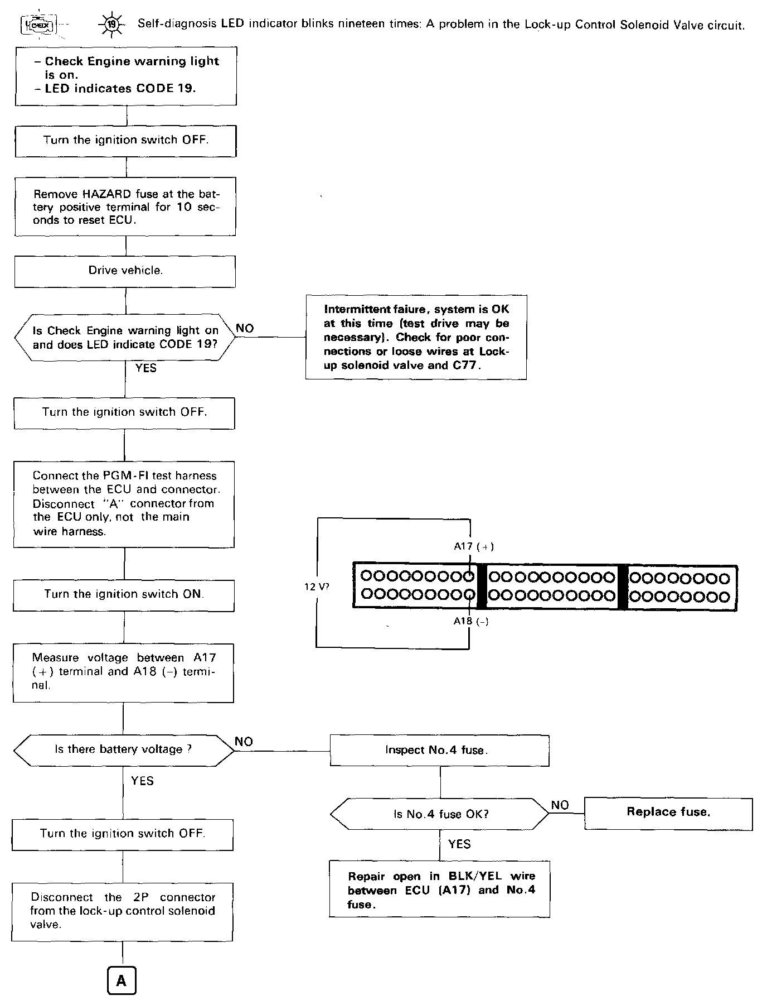
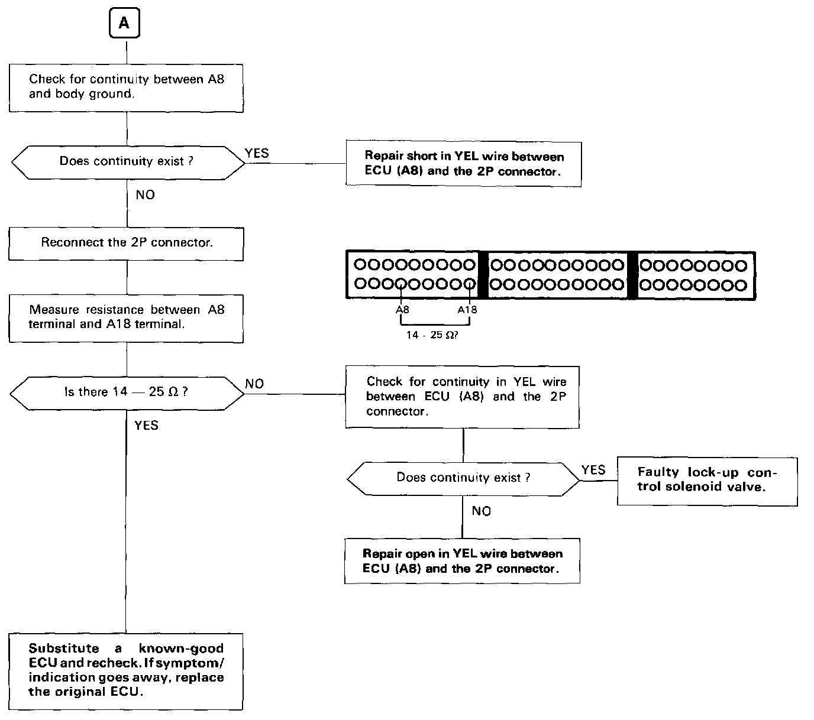

Operation CHARM
: Car repair manuals for everyone.
Home
>>
Acura
>>
1989
>>
Integra L4-1590cc 1.6L DOHC FI
>>
Repair and Diagnosis
>>
A L L Diagnostic Trouble Codes ( DTC )
>>
Testing and Inspection
>>
Manufacturer Code Charts
>>
DTC 19
DTC 19


TROUBLESHOOTING FLOWCHART